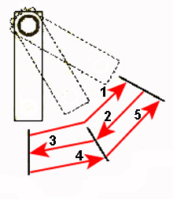

This function is used to check that solenoid valves, lines, and pipe installations are trouble-free. The solenoid valves are activated in a sequence that resembles ABS-braking. The sequence is repeated 5 times in approx. 20 second intervals, a total of approx. 100 seconds.
Note:
The test cannot be cancelled when sequence is in progress.
Test conditions:
Parking brake released.
Brake pedal pressed down.
Engine speed 1,000 rpm or constant air supply to the air system.
Procedure:
Start the function.
Select solenoid valve for the wheel to be activated.
A dialogue shows the test conditions, check these.
The test is activated, check that the brake lever moves as shown in the figure below. The test takes approx. 100 seconds.
Function done.
If the function fails, check the test conditions and repair any faults.
